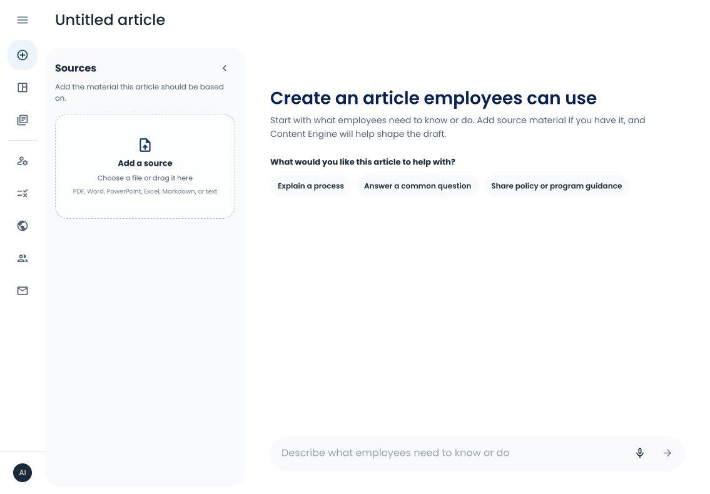

Content Engine · Self-initiated at PepsiCo
I found an unowned problem and decided where AI, rules and people each get authority.
A UX design manager described how hard it was to create and govern employee content across markets. I defined a product direction, built a working prototype in two weeks and tested it with nine employees.

In 30 seconds
One article took too many people, tools and manual standards checks.
AI drafts, rules check, people decide.
Less automation, in exchange for authority people would trust.
A working POC tested with nine employees; a first pilot is proposed.
The situation
Content work was spread across too many people and places.
Articles could involve HR partners, comms leads, market teams, source documents, templates and reviewers across regions. PepsiCo’s article standards mattered but were hard to follow and check by hand, and small inconsistencies (locale formatting, tone, policy language drifting by market) made content harder to trust.
The people writing were employees doing this alongside their main jobs. They’d use the tool infrequently, so familiar patterns and low relearning mattered more than power features.
The reframe
People were already writing with AI. What was missing was a governed path from source to approved article.
Users were already drafting with ChatGPT and Copilot. Generating text wasn’t the gap. The gap was keeping sources, standards, review and ownership connected, so the question became where each kind of decision should live.
Strategic decisions
Conversation plus sources, not a blank prompt
ChoseA familiar conversational flow with source documents visible beside the draft. Users asked directly for upload and a more passive, draft-from-my-sources workflow.
Said no toA blank prompt box that leaves people guessing what to give it.
Separate language from rules
ChoseAI interprets and drafts; required metadata, workflow states and readiness checks stay predictable and testable.
Said no toLetting the model own compliance and workflow.
People make the final call
ChoseFive human gates, from confirming the brief to approving publication. Performance and governance signals inform a person; they never edit content on their own.
Said no toAuto-publishing, or silent edits driven by analytics.
The authority model
Interpret a brief, organize sources, draft, revise, localize and explain a suggestion.
Required fields, status, readiness checks, review dates and duplicate or staleness signals.
Select sources, verify facts, resolve exceptions, approve and publish.
What testing showed
Each session either validated the next feature or prompted a real pivot. Feedback added the conversational drafting layer and the governance dashboard that content owners asked for.
“We can see our feedback influencing what was implemented since the last time we talked.”Research participant
“How can we get this next week? This is going to provide so much value.”Research participant
Prototype boundaries
Creation with sources, guided conversation, writer, manager and admin views, metadata, performance and governance.
Generated responses, some workflow transitions, analytics data and policy checks use prototype logic or mock data.
Retrieval and citations, identity and permissions, audit history, model monitoring, integrations and formal evaluations.
Demo videos and detailed workflow screens are confidential. Ask for a walkthrough.
Outcome
A tested direction, and a pilot on the table
Canada has been proposed as the first pilot, and funding proposals are being written. A pilot would measure time to a reviewable draft, how much content-team support authors still need, and whether employees independently produce standards-aligned articles.
Status: user-tested proof of concept. No funding decision yet.
Reflection
The most useful thing I designed was the boundary.
Deciding where AI stops made the rest of the product easier to trust and easier to build. I’d start the next AI workflow the same way: map which decisions belong to the model, the rules and the people, then design the experience around those lines.